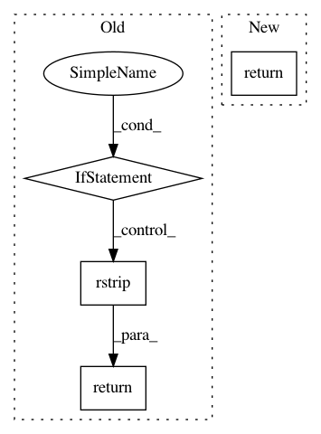

87664d0302bcf7b666f7b669dbdb8eefb031de0b,generator/modules/caffe.py,Caffe,build,#Caffe#,13
Before Change
def build(self):
pyver = self.composer.ver(Python)
cpu_only = self.composer.cuda_ver is None
return (r"""
$GIT_CLONE https://github.com/BVLC/caffe ~/caffe && \
sed -i "s/CV_LOAD_IMAGE_COLOR/cv::IMREAD_COLOR/g" ~/caffe/src/caffe/layers/window_data_layer.cpp && \
sed -i "s/CV_LOAD_IMAGE_COLOR/cv::IMREAD_COLOR/g" ~/caffe/src/caffe/util/io.cpp && \
sed -i "s/CV_LOAD_IMAGE_GRAYSCALE/cv::IMREAD_GRAYSCALE/g" ~/caffe/src/caffe/util/io.cpp && \
cp ~/caffe/Makefile.config.example ~/caffe/Makefile.config && \
sed -i "s/// %s/%s/g" ~/caffe/Makefile.config && \
""" % (
("CPU_ONLY", "CPU_ONLY") if cpu_only else \
("USE_CUDNN", "USE_CUDNN") \
)).rstrip() + (
"" if pyver == "2.7" else r"""
sed -i "s/// PYTHON_LIBRARIES/PYTHON_LIBRARIES/g" """
+ r"""~/caffe/Makefile.config && \
""".rstrip()
) + r"""
sed -i "s/// WITH_PYTHON_LAYER/WITH_PYTHON_LAYER/g" """ \
+ r"""~/caffe/Makefile.config && \
sed -i "s/// OPENCV_VERSION/OPENCV_VERSION/g" """ \
+ r"""~/caffe/Makefile.config && \
""".rstrip() + (
r"" if cpu_only else r"""
sed -i "s/// USE_NCCL/USE_NCCL/g" ~/caffe/Makefile.config && \
sed -i "s/-gencode arch=compute_20,code=sm_20//g" ~/caffe/Makefile.config && \
sed -i "s/-gencode arch=compute_20,code=sm_21//g" ~/caffe/Makefile.config && \
""".rstrip()
) + (r"""
sed -i "s/2\.7/3\.5/g" ~/caffe/Makefile.config && \
sed -i "s/boost_python3/boost_python35/g" ~/caffe/Makefile.config && \
""" if pyver == "3.5" else (
r"""
sed -i "s/2\.7/3\.6/g" ~/caffe/Makefile.config && \
sed -i "s/3\.5/3\.6/g" ~/caffe/Makefile.config && \
sed -i "s/boost_python3/boost_python36/g" ~/caffe/Makefile.config && \
""" if pyver == "3.6" else
r"""
"""
)).rstrip() + r"""
sed -i "s/\/usr\/lib\/python/\/usr\/local\/lib\/python/g" """ \
+ r"""~/caffe/Makefile.config && \
sed -i "s/\/usr\/local\/include/\/usr\/local\/include """ \
+ r"""\/usr\/include\/hdf5\/serial/g" ~/caffe/Makefile.config && \
sed -i "s/hdf5/hdf5_serial/g" ~/caffe/Makefile && \
sed -i "s/// Debugging/COMMON_FLAGS += -std=c++11\n// Debugging/g" ~/caffe/Makefile && \
cd ~/caffe && \
make -j"$(nproc)" -Wno-deprecated-gpu-targets distribute && \
// fix ValueError caused by python-dateutil 1.x
sed -i "s/,<2//g" ~/caffe/python/requirements.txt && \
$PIP_INSTALL \
-r ~/caffe/python/requirements.txt && \
cd ~/caffe/distribute/bin && \
for file in *.bin; do mv "$file" "${file%%%%.bin}"; done && \
cd ~/caffe/distribute && \
cp -r bin include lib proto /usr/local/ && \
cp -r python/caffe /usr/local/lib/python%s/dist-packages/ && \
""" % pyver
After Change
def build(self):
cpu_only = self.composer.cuda_ver is None
return (r"""
apt-get update && \
DEBIAN_FRONTEND=noninteractive $APT_INSTALL \
caffe-%s \
&& \
""" % ("cpu" if cpu_only else "cuda")
).rstrip()
In pattern: SUPERPATTERN
Frequency: 3
Non-data size: 4
Instances
Project Name: ufoym/deepo
Commit Name: 87664d0302bcf7b666f7b669dbdb8eefb031de0b
Time: 2019-10-17
Author: a@ufoym.com
File Name: generator/modules/caffe.py
Class Name: Caffe
Method Name: build
Project Name: ufoym/deepo
Commit Name: 906e4f4946a5511377972cd26b124374f48e2d50
Time: 2020-01-28
Author: a@ufoym.com
File Name: generator/modules/torch.py
Class Name: Torch
Method Name: build
Project Name: miso-belica/sumy
Commit Name: fb1065c0807c8f112c7469ced3849fe9512acb48
Time: 2014-04-26
Author: miso.belica@gmail.com
File Name: sumy/utils.py
Class Name:
Method Name: get_stop_words